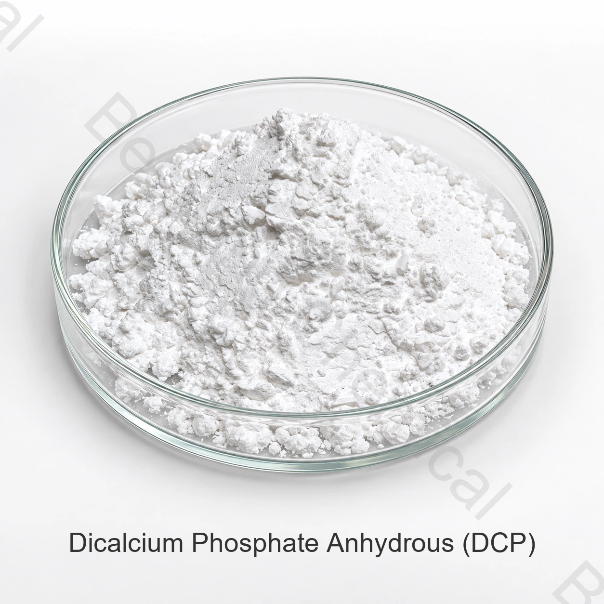

Zulieferer von Dicalciumphosphat in Futtermittelqualität
Genaue Form, Zielart, Art des Futtermittels, Menge, Verpackung, Bestimmung und erforderliche Unterlagen angeben.
Futtermittelzutat · Futtermittelmineral und -puffer · DCP
Futtermittel-Dicalciumphosphat ist eine Kalzium- und Phosphorquelle für die Tierernährung; wasserfreie und Dihydratformen sind keine austauschbaren analytischen Identitäten.

Muster von wasserfreiem DCP. Die benötigte Hydratform in der Kaufspezifikation bestätigen.
Produktbild · Qualität und Verpackung bei Bestellung bestätigen
Geben Sie die genaue Form, Zielart, Futtermittelkategorie, Menge, Bestimmung und Dokumente an.
QualitätsstufeFuttermittelqualität, vorbehaltlich der Herkunftsqualifikation
SpezifikationAktuelle Spezifikation auf Anfrage
VerwendungsbedingungenArten und Bestimmungsregeln gelten
ChargennachweiseAktueller COA für gelieferte Chargen verfügbar
Produkt kurz erklärt
Futtermittel-Dicalciumphosphat ist eine Kalzium- und Phosphorquelle für die Tierernährung; wasserfreie und Dihydratformen sind keine austauschbaren analytischen Identitäten.
Die Eignung hängt vom genauen Produkt, der Zieltierart, dem Lebensphase, der Gesamtration, der beabsichtigten technologischen oder ernährungsphysiologischen Funktion und der Zulassung des Zielmarktes ab.
Einkaufsleitfaden
Nutzen Sie diese Angaben für eine präzise Lieferantenanfrage, wenn Sie eine Hersteller von Futtermittelzusatzstoffen, einen Lieferanten aus China, ein Händlerangebot, ein Muster oder ein Angebot für eine Handelsmenge vergleichen.
Genaue Form, Zielart, Art des Futtermittels, Menge, Verpackung, Bestimmung und erforderliche Unterlagen angeben.
Fordern Sie ein lieferantenspezifisches Angebot mit aktueller Spezifikation, Incoterm, Bestimmungsland und Lieferzeit an.
Geben Sie die Formulierungsgrundlage, die beabsichtigte Funktion, den Prozess, das Einmischung und die geltenden Futtermittelvorschriften an.
Qualifizieren Sie Identität, Methoden, COA, SDS, Rückverfolgbarkeit, Zertifikate und Änderungskontrollerwartungen.
Anwendungsscreening
Dies sind Prüfbereiche, keine universellen Genehmigungen, Fütterungsanweisungen, Dosierungsempfehlungen oder garantierte Ergebnisse.
Die Mineralergänzung mit Mischfuttermitteln wird anhand der aktuell vereinbarten Spezifikation, der vollständigen Futtermittelformulierung, der Zielarten und der Anforderungen des Zielmarktes bewertet.
Vormischungen und Mineralkonzentrate werden anhand der aktuell vereinbarten Spezifikation, der vollständigen Futtermittelformulierung, der Zielarten und der Anforderungen des Zielmarktes bewertet.
Die Pufferung und die Elektrolytformulierungen werden anhand der aktuell vereinbarten Spezifikation, der vollständigen Futtermittelformulierung, der Zielarten und der Anforderungen des Zielmarktes bewertet.
Art- und lebensphasenspezifische Ernährung anhand der aktuell vereinbarten Spezifikation, der vollständigen Futtermittelformulierung, der Zielarten und der Anforderungen des Zielmarktes bewerten.
Technische Auswahl
Die genaue Chemikalie, die Hydratation und die Nährstoffform sind anhand der aktuell vereinbarten Spezifikation, der vollständigen Futtermittelformulierung, der Zielarten und der Anforderungen des Zielmarktes zu bewerten.
Bewerten Sie die Elementbasis und den Kontext der Bioverfügbarkeit anhand der aktuell vereinbarten Spezifikation, der vollständigen Futtermittelformulierung, der Zielarten und der Anforderungen des Zielmarktes.
Kontaminanten, Partikelgröße und Durchfluss werden anhand der aktuell vereinbarten Spezifikation, der vollständigen Futtermittelformulierung, der Zielarten und der Anforderungen des Zielmarktes bewertet.
Bewertung der Gesamternährungsgrenzwerte und der Zielvorschriften anhand der aktuell vereinbarten Spezifikation, der vollständigen Futtermittelformulierung, der Zielarten und der Anforderungen des Bestimmungsmarktes.
Technische Dokumentation
Wenden Sie sich an den Vertrieb für die aktuelle lieferantenspezifische Spezifikation oder TDS und bestätigen Sie, dass ihre Überarbeitung, Methoden und Kriterien Ihrem Zulassungsprozess entsprechen.
Fordern Sie die aktuelle signierte Spezifikation oder TDS, SDS, Analysemethoden, ein repräsentatives COA und ein chargenbezogenes COA.
Überprüfen Sie Dokumente zu Herkunft, Rückverfolgbarkeit, Futtermittelsicherheit, Qualität und Produktionsstandort für die genaue Einstufung.
Prüfen Sie Übersicht über Futtermittelzusatzstoffe der EFSA und Zulassungsleitfaden. Prüfen Sie dann die aktuellen Regeln in jedem Zielmarkt.
Hinweis zur Einhaltung der Futtermittelvorschriften: Eine Identität oder technische Funktion erlaubt nicht die Verwendung für jede Art, jede Futtermittelkategorie, jede Route oder jeden Markt.
Lagerung und Handhabung
Fragen des Futtermittelkäufers
Futtermittel-Dicalciumphosphat ist eine Kalzium- und Phosphorquelle für die Tierernährung; wasserfreie und Dihydratformen sind keine austauschbaren analytischen Identitäten.
CAS-Nr. 7757-93-9 (wasserfrei); Calciumhydrogenphosphat; Hydrat kann abweichen; umfasst eine Bezeichnung Salze, Hydrate, Trägerstoffe oder eine Produktfamilie, ist die genaue angebotene Form anzugeben.
Fordern Sie beim Vertrieb die aktuelle lieferantenspezifische Spezifikation oder TDS, Methoden und repräsentatives COA.
Fordern Sie die aktuelle Spezifikation oder TDS, SDS, ein repräsentatives COA und das chargenbezogene COA, Rückverfolgbarkeit und entsprechende Futtermittelsicherheits-, Qualitäts-, Herkunfts- und Standortdokumente für die genaue Quelle an.
Geben Sie die genaue Qualität und Form, Zielart, Futtermittelkategorie, beabsichtigte Funktion, Menge, Verpackung, Zielmarkt, erforderliche Dokumente, Incoterm und Lieferdatum an.
Verbundene Beschaffung
Durchsuchen Sie Futtermineralien, Aminosäuren, Säuerungsmittel, Trägerstoffe und funktionelle Nährstoffe.
Besprechen Sie eine aktuelle Spezifikation, Dokumente, Muster und kommerzielle Anforderungen.
Überprüfung der Beschaffung und Exportunterstützung für die internationale Beschaffung von Futtermitteln.
Spezifikationsbasierte Futtermittelbeschaffung
Genaue Form, Zielart, Futtermittelkategorie, beabsichtigte Funktion, Menge, Verpackung, Bestimmung und Dokumentenliste für einen relevanten Vorschlag angeben.
Diese Seiten behandeln verwandte Materialien für verschiedene Branchen. Qualität, Spezifikation und zulässige Verwendung richten sich nach der vorgesehenen Anwendung.
Nennen Sie Qualität und Zielmarkt, damit wir verfügbare Dokumente für Ihren Auftrag bestätigen können.
Eine externe Referenz ist kein Chargenzertifikat und keine Bespring-Produktspezifikation.